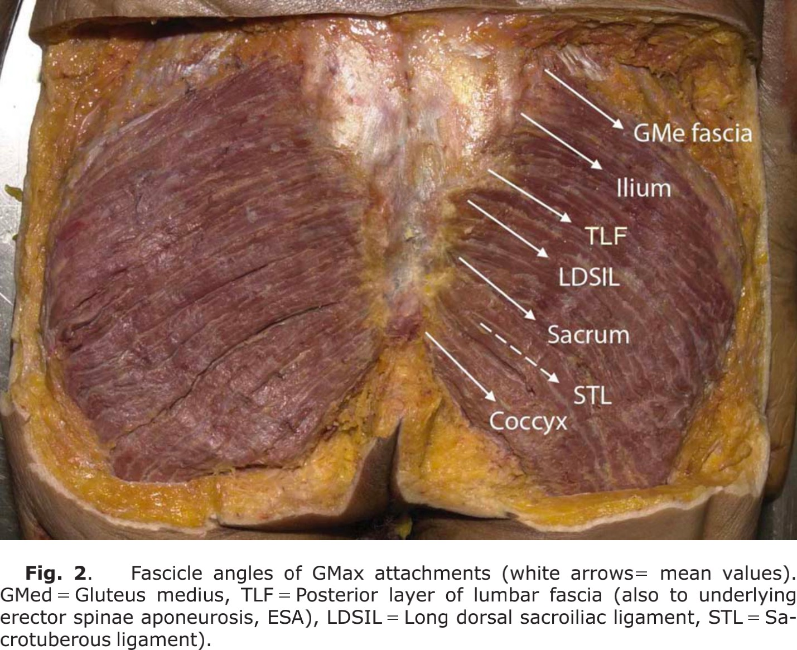
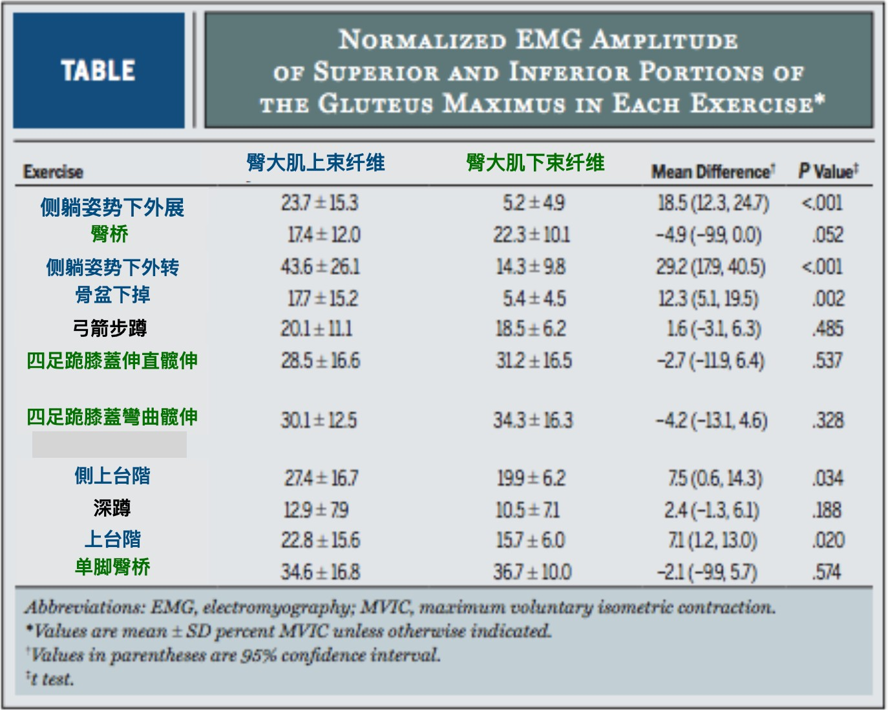
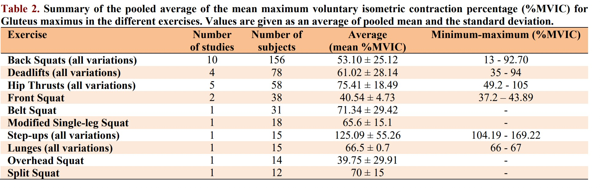
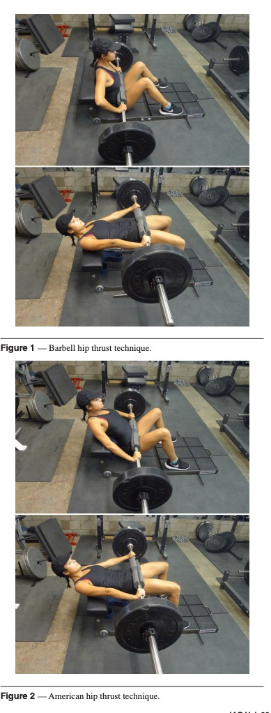
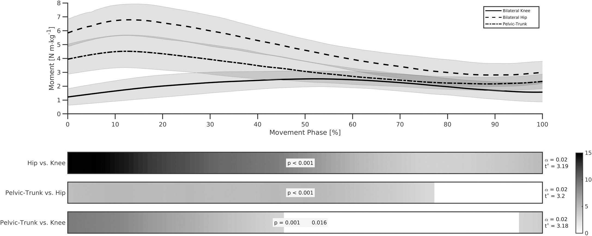

臀推
本章介绍臀大肌的解剖、臀推的动作设置及训练安排。学习重点是让负荷、活动范围与个人能力相匹配，并根据持续训练的表现调整计划。
臀推通过髋关节伸展完成负重移动，是训练臀部的一种实用选择。与重复完成大量徒手动作相比，外加负荷便于记录与逐步调整，但训练效果仍取决于动作质量、训练量和恢复。一次约45分钟的训练可以产生充血和疲劳感；稳定的肌肉增长需要连续数周乃至更长时间的训练。臀围还受脂肪、体液和测量方法影响，宜在相近条件下定期记录。
Bret Contreras等研究者对臀推的肌电与训练适应开展了研究。臀推便于对髋伸肌施加较大的外部负荷，但负重数值本身并不代表臀大肌承受的张力，也不决定增肌效率。与深蹲、硬拉相比，臀推的支撑方式、髋膝运动及阻力矩随动作变化的特点不同。选择时应结合增肌、力量或运动表现目标，以及器材、舒适度与可持续进阶的条件。下面先认识臀大肌的解剖与研究证据。
臀大肌起于髂骨后部、骶骨和尾骨后面，以及骶结节韧带等邻近筋膜结构；浅层较多纤维止于髂胫束，深层部分纤维止于股骨臀肌粗隆。其主要作用包括伸髋和髋外旋，并参与支撑骨盆与躯干。臀大肌与骶髂区域的筋膜、韧带存在解剖联系。出现该区域疼痛时，训练选择应依据具体功能和症状评估，韧带或关节损伤的判断属于临床诊疗范围。
Barker等在2014年发表的解剖与力学研究中，分析了臀大肌与骶髂关节及胸腰筋膜的联系。研究估计约70%的臀大肌生理横截面积对应跨越骶髂关节的纤维，提示其可能参与骶髂区域的力传递与压缩稳定。这是特定标本与模型条件下的解剖力学估计；人体腰椎的承载能力和单块肌肉的稳定贡献，取决于姿势、组织状态及协同收缩等多种因素。骶髂关节连接骶骨与髂骨，腰骶关节主要指腰椎与骶骨之间的连接，两者应分别讨论。

理解臀大肌可以从区域功能和整体协同两个层面入手。上部、下部或深浅层的划分反映不同研究目的，肌纤维在实际动作中共同工作。
Selkowitz等（2016）让20名健康受试者完成11种常见治疗性练习，用细线电极记录臀大肌上、下部肌电。在包含外展或外旋成分的部分动作中，上部相对活动较高；以伸髋为主的动作通常同时募集上、下部，两者差异未达显著。该结果描述的是当次动作中的区域募集，并非长期肌肥大的比较。

看到深蹲、弓箭步与侧卧练习的肌电数值不同时，应先检查外加负荷、动作范围和归一化方法。治疗性动作中的一次肌电测量，回答的是特定任务下的募集情况。训练后肌肉是否增长，还需要纵向研究。局部电极记录也不能代表整个臀大肌的活动分布；对未记录区域的作用，应保留测量边界。
臀推将外部负荷施加于骨盆附近，身体通过上背支撑、足部支撑与髋伸肌发力共同完成动作。研究骨盆稳定时，需要区分外部负荷、关节净力矩与组织内部受力。臀推的目标是可控地伸髋，设置舒适的杠垫、稳定支撑和合适负荷，是教练需要直接检查的环节。
肌肉区域分类的价值在于帮助理解动作，而不是把一块肌肉拆成互不相干的开关。例如，深蹲同时包含伸髋、膝部控制及骨盆躯干协同，臀大肌不同区域均可能参与；准确的募集比例需要特定测量。安排臀部训练时，可综合伸髋、外展或外旋任务，并通过训练后的力量、围度或影像学变化评估效果，避免仅依据单次肌电峰值选择动作。
在熟悉的动作中，负荷逐步增加常反映力量或技术进步。遇到平台期时，先检查训练量、恢复和技术，再决定是否调整动作。不同动作的杠铃重量不能直接换算为某块肌肉的力量：力臂、身体支撑、关节角度、运动速度及疲劳都会改变训练需求。Krause Neto等（2020）的综述提示，比较不同动作的肌电时必须考虑这些条件。
较重负荷、较快的发力意图、不同肌肉长度与稳定性需求，可能改变神经肌肉活动，但这些因素与肌电幅度并非简单的单调关系。不稳定支撑有时增加部分稳定肌活动，也可能降低可输出的力和可使用的负荷。训练目标若是增加目标肌群的力量或肌量，宜优先选择能稳定、重复地完成并可记录进阶的动作；平衡与协调训练则可另行安排。
Krause Neto等（2020）汇总的研究中，登阶变式出现较高的臀大肌肌电值。但各研究的样本、负荷和归一化方式不同，跨研究平均值适合提供线索，不能视为相同条件下的动作优劣检验。登阶兼有单腿支撑与伸髋要求，适合训练上下台阶能力；实际负重应以台面牢固、落脚稳定和可控下放为前提，训练不必采用1RM测试。

臀推、深蹲、硬拉、分腿蹲和登阶均可纳入臀部训练。臀推便于重点练习伸髋，深蹲和分腿蹲同时对膝伸肌提出要求，硬拉强调髋铰链与负重搬举，登阶强调单腿支撑。动作组合根据目标和耐受程度确定，训练记录应包括负荷、组次、活动范围及剩余次数，而不只记录"臀部感觉"。
Macadam与Feser（2019）按阻力方向等特征归纳自重伸髋练习，展示了不同任务下臀大肌募集的变化。男女在绝对负荷、相对强度和肌电归一化条件上的差异，都会影响比较结果。课程设置以个人能力和目标为依据，不用性别推定某种固定的骨盆保护反应。
臀推中踝关节的运动幅度通常较小，但足部支撑、膝髋对线、上背接触位置和颈部舒适度仍需检查。起始时凳子应稳定，杠垫置于髋前方合适位置，双足稳固着地。先用轻负荷调整脚距，使伸髋过程顺畅、膝部方向与足部大致一致；顶端小腿接近竖直可作为起点，再按个体比例微调。
臀推需要躯干肌群参与协调。可先建立适度腹壁张力，并在可控负荷下配合呼吸，避免为抬高杠铃而持续抬胸和过度后仰。Pirouzi等（2006）观察到慢性腰痛者在标准化次最大躯干旋转任务中的髋伸肌活动有所增加。此类观察描述疼痛相关的运动策略，未检验臀推是否造成深层肌抑制或日后损伤。
臀部力量与整体训练能力需要共同发展。计划中可根据需要安排躯干耐力、抗旋转或其他基础练习，并与下肢训练量协调。训练时及训练后的症状变化、恢复和动作表现，比推测"臀部与核心比例失调"更有助于调节负荷。
Krause Neto等（2019）汇总了臀推的肌电和表现研究。纳入研究记录了臀大肌、竖脊肌、腘绳肌及部分股四头肌，但所测肌肉与实验条件并不完全相同。未记录腹部肌电的实验，无法提供腹肌参与程度的直接信息。教练仍应观察呼吸、肋骨与骨盆的协同，以及动作全过程的稳定性。
躯干练习可以与臀推组合，也可安排在其他训练日。是否增加及增加多少，依据现有能力、训练目标和总疲劳决定，没有适用于所有人的固定配比。一般轻中负荷教学时可在发力阶段平稳呼气，在回程吸气；较重负荷时采用适合本人健康状况、训练经验及动作节奏的呼吸和支撑策略。
长期训练的价值来自持续积累。臀推重量增加时，也要检查是否仍能维持计划中的活动范围和节奏。可用相同脚距与支撑高度记录视频，结合负荷、完成次数和恢复情况比较进步。基础躯干练习是训练工具之一，应服务于实际任务，而不作为每次训练前必须完成的固定流程。
Contreras等（2016）研究了13名熟悉臀推的健康女性，让其按随机平衡顺序以各变式的10RM完成10次，比较杠铃、弹力带和美式臀推。标准杠铃臀推的臀大肌平均肌电高于另两种变式；这是一项急性肌电比较。变式同时包含动作方式等差异，不能把结果全部归因于肩胛某一接触点。
实际教学时，以凳面稳定承托上背、颈部舒适、髋能完成目标活动范围为准。支撑高度过高或过低导致滑动、颈部受压或动作失控时，应先调整凳高与身体位置。初学者可从地面臀桥练习，再过渡到上背支撑的臀推，负荷和活动范围分别渐进。

可尝试"全脚掌压稳地面""膝盖沿脚尖方向移动""用髋把杠铃推起"等口令。需要外旋提示时，强调轻柔产生向外的意图，保持足底接触，避免强行扭脚或让膝部不适。一次只调整一个提示，并观察动作、舒适度和重复表现的变化；口令的效果因人、负荷和任务而异。
臀推中骨盆与躯干随髋伸展协调移动。到达顶端时，目标是完成舒适、可控的伸髋，使躯干与大腿接近同一直线，而不是用腰椎持续后伸追求更高位置。
Brazil等（2021）让19名有训练经验的男性完成70% 1RM的3次臀推，利用运动捕捉和测力数据分析抬起阶段。髋关节承担较大的伸展净力矩，力矩在抬起过程中随姿势变化；研究未测量下放阶段的肌电。图中的曲线表示关节力矩而非肌肉收缩百分比。
"肋骨与骨盆保持配合"或"轻轻收住骨盆"可帮助容易后仰的人完成顶端控制。骨盆后倾是可选择的提示，不要求所有人在顶端强制执行骨盆后倾。下放时保持支撑和控制，回到自身能够稳定完成的起点。

Plotkin等（2023）让34名初练者分别接受9周臀推或深蹲训练，两组训练组数相当，MRI测得的臀大肌增长相近；深蹲组的大腿肌群增长较多，力量提升更偏向各自训练动作。初次训练时较高的臀推肌电并未稳定预测之后的增肌幅度。该研究帮助教练将急性募集与长期适应分开看待，其结果仍受样本与训练周期限制。
Krause Neto等（2025）的系统综述进一步汇总了多种伸髋训练的增肌研究。总体上，臀推、深蹲及组合练习均可发挥作用；单一动作与组合方案的选择，应考虑是否希望同时训练大腿其他肌群。
一般无症状初学者可从每周2次、每次2~3组、每组8~12次的臀推练习起步，先保留约2~4次余力。该安排是便于教学的起始示例，需与整周其他臀腿训练合并计算。两次练习之间留出恢复时间；动作范围和节奏稳定、训练后恢复良好时，再小幅增加重量或次数。
同一周期可搭配一种蹲类或单腿动作。若目标还包括腿后侧肌肉发展，加入适合的髋铰链与屈膝练习。每次调整一个主要变量，并记录训练中及次日的反应。
Krause Neto等(2019). Barbell Hip Thrust, Muscular Activation and Performance: A Systematic Review.
https://doi.org/10.7717/peerj.7057
Barker等(2014). Anatomy and biomechanics of gluteus maximus and the thoracolumbar fascia at the sacroiliac joint.
https://doi.org/10.1002/ca.22233
Elzanie与Borger(2023). Anatomy, Bony Pelvis and Lower Limb, Gluteus Maximus Muscle.
https://www.ncbi.nlm.nih.gov/books/NBK538193/
Selkowitz等(2016). Comparison of Electromyographic Activity of the Superior and Inferior Portions of the Gluteus Maximus Muscle During Common Therapeutic Exercises.
https://doi.org/10.2519/jospt.2016.6493
Macadam与Feser(2019). Examination of Gluteus Maximus Electromyographic Excitation Associated with Dynamic Hip Extension During Body Weight Exercise: A Systematic Review.
https://pmc.ncbi.nlm.nih.gov/articles/PMC6350668/
Krause Neto等(2020). Gluteus Maximus Activation during Common Strength and Hypertrophy Exercises: A Systematic Review.
https://pmc.ncbi.nlm.nih.gov/articles/PMC7039033/
Pirouzi等(2006). Low back pain patients demonstrate increased hip extensor muscle activity during standardized submaximal rotation efforts.
https://doi.org/10.1097/01.brs.0000250076.74366.9d
Contreras等(2016). A Comparison of Gluteus Maximus, Biceps Femoris, and Vastus Lateralis Electromyography Amplitude for the Barbell, Band, and American Hip Thrust Variations.
https://doi.org/10.1123/jab.2015-0091
Brazil等(2021). A comprehensive biomechanical analysis of the barbell hip thrust.
https://doi.org/10.1371/journal.pone.0249307
Sanika等(2021). Comparison of Gluteus Maximus Activation to Flexion Bias Exercises Along with MET Technique in Subjects with Anterior Rotated Sacroiliac Joint Dysfunction a Randomised Controlled Trial.
https://pubmed.ncbi.nlm.nih.gov/33654504/
Plotkin等(2023). Hip thrust and back squat training elicit similar gluteus muscle hypertrophy and transfer similarly to the deadlift.
https://doi.org/10.3389/fphys.2023.1279170
Krause Neto等(2025). The impact of resistance training on gluteus maximus hypertrophy: a systematic review and meta-analysis.
https://doi.org/10.3389/fphys.2025.1542334